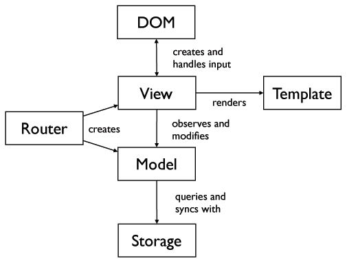
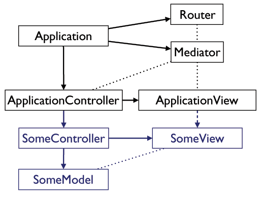

Let us start with a look on web applications from a birds-eye view. Rather than defining what web applications are and what distinguishes them from normal web sites, let’s just collect some characteristics of such interfaces.
First, an application typically consists of several screens with specific transitions between them. A screen often consists of several parts or views. Some of them persist over several screens, while others are replaced. These views (TODO As this article is in large parts about MVC, the term "view" could be confusing -- what is clearer?) often depend on each other and communicate with each other.
In any typical web application a lot of asynchronous input and output happens. As the user interacts with the application, data needs to be fetched from remote servers in order to be displayed. In the same process, some of the user actions may also need to be sent to the same or other servers to be stored persistently. Since the rise of the Ajax paradigm, reading and writing data is expected to not block the user interface and to not bother the user.
Recent web apps are also mashups of several services. It’s common that an application communicates with several APIs using HTTP, Websockets etc. Third-party scripts and external Web services play an important role nowadays. For swift startup and a light footprint, these services should be loaded on-demand.
These features of web applications already tell a lot about the demands on the internal software architecture. When evaluating libraries and tools for making JavaScript applications, we should bear these characteristics in mind.
[The “Todo List Example” is not such an app]Developing JavaScript applications has never been easier as it is today. There are mature open-source libraries and tools which focus on different aspects. Virtually every day new libraries and architectures pop up. While this gold rush brings innovation and diversity, it has its downsides.
First, it’s difficult for developers to pick a solution which fits their needs. Second, JavaScript application frameworks only share few conventions and standards. For example, they might have their own interpretation of classic software patterns like Model View Controller. Third, you’re kind of trapped after you’ve chosen a development stack. Migrating to another library or architectural approach often means rewriting the application from scratch.
This is also problematic from a business perspective. If every JavaScript application is a beautiful flower, it’s hard to find a developer which is familiar with a specific architecture and toolchain and can be trained in a reasonable amount of time.
When you start to develop a JavaScript application, you need to chose existing libraries and tools to build upon. This is an incomplete list of tasks you probably have to find solutions for:
Of course not every application will need to find an answer to each of these questions. Most full-stack application frameworks provide built-in solutions for several of these tasks. As an alternative, you might combine smaller libraries, tools and patterns yourself to cover all relevant tasks.
This article will focus on Backbone.js, a library which aims to structure JavaScript applications and accelerate their development. As we will see, it only covers some of the fields listed above. Nevertheless Backbone includes some great and valuable patterns without limiting flexibility.
Backbone.js is simple and small library. The current version is roughly 1.400 lines of JavaScript code, which boils down to a file size of 5.6 KB when compressed. Although Backbone is quite young, it’s popularity and stability is remarkable. It is used by big players like LinkedIn, Groupon, Foursquare and 37Signals. It’s free and open-source, and there’s a vibrant community evolving the library on Github. As a result, the code has a decent quality, is unit-tested and field-tested alike.
As a hard dependency, Backbone requires Underscore, a small “utility belt” with helper methods for working with objects, lists and functions. In addition, Backbone is used in conjunction with jQuery as DOM scripting library, and a HTML templating engine of your choice (_.template, Mustache, Handlebars etc.)
Backbone basically introduces three main concepts:
So the key point of Backbone is a separation of two concerns: Model objects hold the data, while Views create a user interface to interact with this data. That’s basically all Backbone.js can do for you, but it’s much, so let’s have a deeper look into these patterns.
Backbone consists of just six classes and mixins. Four of them are typically used directly. The remaining two are used internally, but turn out to be highly valuable, as we will later see.
Events is an internal mixin which is included by all other Backbone classes. It’s mentioned here first because it provides Backbone’s key feature: dispatching and handling custom events on arbitrary objects. In Backbone, application modules observe other modules by listening to their events.
The mixin consists of three methods: on to register a handler function for an event, off to remove a handler and trigger to dispatch a custom event. By including Backbone.Events, these methods are available on all Backbone classes. If you’re familiar with DOM event handling, you might recognize this pattern from libraries like jQuery or Prototype.
Model objects hold some raw data. They provide an interface to read, process and alter the data. They are also responsible for reading the data from and writing it to a storage solution. Typically, models synchronize with web servers using RESTful HTTP and JSON.
The key feature of models is the attributes hash, which is the internal data store. For reading an attribute value, use the get() method, for changing the value directly, use the set(). Attribute changes will fire change events.
…
var Car = Backbone.Model.extend();
var car = new Car({
name: 'DeLorean DMC-12'
});
alert( car.get('name') );
Collections are lists of models. Under the hood, they use a normal array to store the objects. But a collection offers a variety of convenience methods for iteration, searching, filtering and sorting. When a collection is changed, it triggers add, remove or reset events so another module can observe the changes. Like a model, a collection may fill itself by fetching a list of models as JSON from a remote server.
Views are responsible for composing the user interface. A view typically holds a DOM element, renders some model data into HTML in order to display it on the screen. For this purpose, a view has a reference to a model or collection.
Views handle user input events which occur in the DOM subtree it manages. For example, a view might display a button and handle clicks on the button. This may include invoking model methods, change model attributes or triggering events.
Views moderate between the HTML/CSS user interface visible on the screen and the models which hold the raw data. The most interesting part here is model binding. A view might listen for events on its model or collection. This is useful to reflect changes of model attributes. If a model attribute changes, the view is notified and is able to display the new value in the user interface.
Views typically render model data into HTML using a template engine. Given the model attributes are { name: 'DeLorean DMC-12' } as in the example above, and the template reads <p>{{name}}</p>, the generated HTML would be <p>DeLorean DMC-12</p>.
…
var CarView = Backbone.View.extend({
initialize: function () {
this.model.on('change:name', this.render, this);
},
render: function () {
this.$el.html('Name: ' + this.model.get('name));
}
});
var carView = new CarView({
model: car,
el: $('#car')
});
carView.render();
A crucial feature of the Web is that most of the web content is addressable by persistent URLs. JavaScript applications may use URLs to save and restore the application state. For example, if the user browses a photo gallery, the URL /users/jane-doe/photos/sunset-on-hawaii/fullview might reflects what the user is currently seeing. This URL may be saved and shared, and there might be downwards-compatible, accessible content behind the address. When someone directly jumps to this URL, the application starts up and restores the state.
Backbone provides means to associate URLs with application screens: A Router consists of URL patterns and methods which are called if these patterns match against the current URL. In these router methods, you might put the code which actually creates some models and views in order show the requested data.
URLs play an important role in Backbone applications, and routers might help you to structure your application on a higher level. If you want transition to another screen in your application, you just tell tell Backbone to navigate to the corresponding URL. Several routers are a good technique to divide your application into addressable screens.
The actual workhorse behind the router is Backbone.History/Backbone.history. This piece of code observes URL changes and dispatches router methods. It can also change the URL programatically without leaving the application. Under the hood, HTML5 History (pushState, popstate events) are used with a hash URL fallback (location.hash, hashchange events).
This is how the architecture of a lain Backbone application could look like. Disclaimer: This is the personal understanding of the authors, not an official recommendation.

If you start developing a JavaScript application with Backbone, Backbone is just the beginning. Backbone is minimalistic by intent and does not aim to provide a full-fledged solution. Especially, Backbone provides no clear and flexible patterns to structure your application on a top level.
Although Backbone has models and views, it’s does not follow the classic definition of the Model View Controller (MVC) pattern. Backbone’s concept doesn’t match similar patterns like Model View Presenter (MVP) or Model View View Model (MVVM) either. Other frameworks implement these patterns in a way which matches the original definition better.
Backbone beginners quickly get stuck in a bunch of architectural questions: What’s the best way to implement a specific application logic in Backbone? Backbone offers several patterns out of the box, like an event-driven architecture, model-view-binding, URLs representing application state. Apart from these, Backbone does not provide a “right answer” to common design question. The principle is “there’s more than one way to do it” rather than “convention over configuration”.
Several extensions came up to address Backbone’s lack of conventions and convenience when building complex applications. Most of them deal with same problems, while their approaches slightly differ. The general idea is to provide an overall application structure above individual models/collections, views and routers.
The most advanced libraries are Marionette and Thorax. Both are open-source and originate from real-life applications with Backbone. There are several more smaller libraries which focus on specific aspects of application development. For instance, the Layoutmanager addresses nested views and rendering lists. Aura is an example for a modularized, event-driven application architecture.
If you plan to build a non-trivial Backbone application, you should not run into the same problems and reinvent the wheel, but chose one of these mature solutions.
In this article, we will describe Chaplin, which is our approach on building large-scale applications using Backbone.js. Chaplin is a solid architecture which was derived from moviepilot.com, a real-world single-page application. By releasing Chaplin as open-source, we would like to document, discuss and improve our application structure.
In constrast to the Backbone extensions named above, Chaplin is not (yet) an external library you can just plug in. It is a set of conventions and some necessary scaffold code.
The following chapters discuss the problems we faced during the development of several JavaScript applications and the solutions we have found in Chaplin.
Every Backbone.js application needs to define where to put the code for creating models and views, fetching data, rendering views, subscribing to events, cleaning up etc. If your application grows to a reasonable amount of modules, you will run into maintainability as well as stability issues if you do not manage to keep your code consistent and non-repetitive.
Backbone’s classes (Model, Collection, View) only provide core functionality and are agnostic of the specific data retrieval, templating and view composition of your application. In Chaplin, our first step to establish conventions was to extend Backbone’s classes. This allowed us to not repeat the same code over and over. For example, while the render method of Backbone.View is empty and has to be defined by yourself, Chaplin’s View class offers a standard way to render the view which is used by almost all views in our application.
We’re writing applications in CoffeeScript, which is a simple meta-language that compiles to plain JavaScript. Alongside with a more readable and easier to type syntax, CoffeeScript provides syntactic sugar for declaring pseudo-classes. By using CoffeeScript, we create larger hierarchies of pseudo-classes. Derived classes may overwrite methods while calling the superclass method without much ado. In addition to classes, we’re using mixins and functional techniques to compose objects.
For a scalable architecture, it’s considered as crucial to keep modules loosely coupled and carefully craft their dependencies.
In Chaplin, we chose RequireJS as a module and dependency manager. In RequireJS, every object is declared using the Asynchronous Module Definition (AMD). A file typically defines a module and includes some other modules. RequireJS loads dependencies on-demand during application runtime, or pre-packages the modules into an application bootstrapper.
This approach has several architectural benefits. It enforces the convention that all modules are encapsuled and can only access the modules they require explicitly. In Chaplin, the RequireJS modules are mostly classes and there is no way to directly access their individual instances.
While direct access between module instances is prevented, we allow modules to communicate with each other in a conventional and more secure way. There’s a central Mediator object which implements the Publish/Subscribe pattern (Pub/Sub). Module which do not have a parent-child-relationship should communicate using global Pub/Sub messaging exclusively.
In Chaplin, the mediator also holds central objects which need to be accessible throughout the application, for example the user object.
The standard Backbone router maps URLs its own methods. This makes it hard to track the application state, implement transitions between screens and clean up after a screen was replaced.
In Chaplin, we did not use the Backbone router at all, but replaced it with our own router. Chaplin’s Router class creates Route objects and registers them on Backbone.history. The actual routes are registered in a separate routes file. In contrast to Backbone’s router, Chaplin’s router serves a single purpose, it publishes matchRoute events when a route matched.
After we have boiled down routing to merely fire a matchRoute event, we introduced controllers. A controller typically represents one screen (or some similar screens) of the application and contains the code that creates the necessary models and views. It consists of several actions like index, show and edit, for example. A route connects a URL pattern to one of these controller actions.
There are two top-level modules in place to manage individual controllers and their views.
First, the ApplicationController listens for matchRoute events, starts the corresponding controllers and calls their actions. It is also responsible for tracking the current application state and stopping old controllers.
Second, the ApplicationView is the top-level view manager. It reacts upon changes of the current controller and shows or hides the controller’s main view. In addition, it handles application-wide DOM events, like clicks on internal links.
This diagram overview illustrate the role of the different module application.

The Application starts up the core modules, it instantiates the Router, the Mediator and the ApplicationController.
While this approach isn’t traditional MVC either, it follows the MVC approach of server-side frameworks like Ruby on Rails.
In JavaScript, there is no explicit way to free the memory occupied by objects which aren’t used any more. Most JavaScript application developers rely on the garbage collector to manage the memory. However, in an event-driven architecture, registering callback handlers creates object references which have to be taken care of.
For example, views often bind to model events while binding the handler to the view instance. When the view is removed from the screen, the handler must also be removed. Otherwise the reference to the handler prevents the garbage collector from wiping the view instance from memory.
Chaplin puts a lot of effort into strict memory management. It standardizes object disposal by requiring a dispose method from every controller, model, collection and view. The core classes of Chaplin allow for automatic disposal. They also provides methods for registering handlers which support automatic disposal. For example, views should use the modelBind method instead of this.model.on directly.
These are just basic, but crucial measures to, to prevent memory leaks and maintain an overall application performance.
Backbone’s own event handling (wrapped) Publish/Subscribe Model and collection synchronization: Mix in jQuery Deferreds More complex finite-state machines (SyncMachine) Function wrappers and accumulators createDeferredFunction, afterLogin, ensureLogin createAccumulator
SessionController for user management User model instance on the mediator Pub/Sub-driven login process: !login, login, !logout, logout events ServiceProviders handle the actual login Client-side login with OAuth providers like Facebook, Google or Twitter